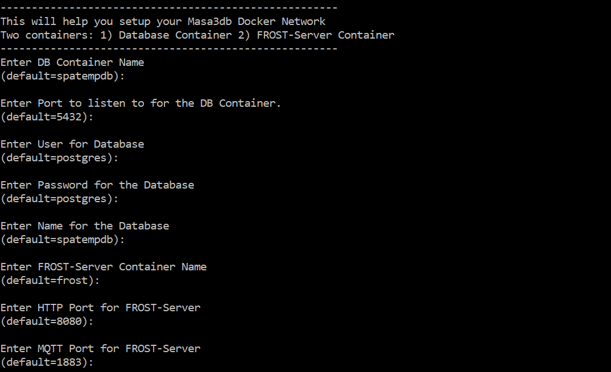
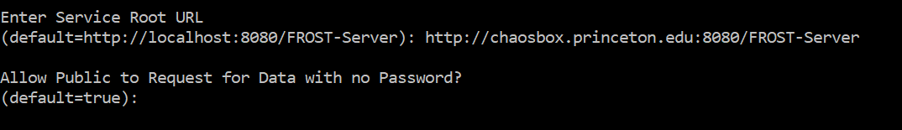
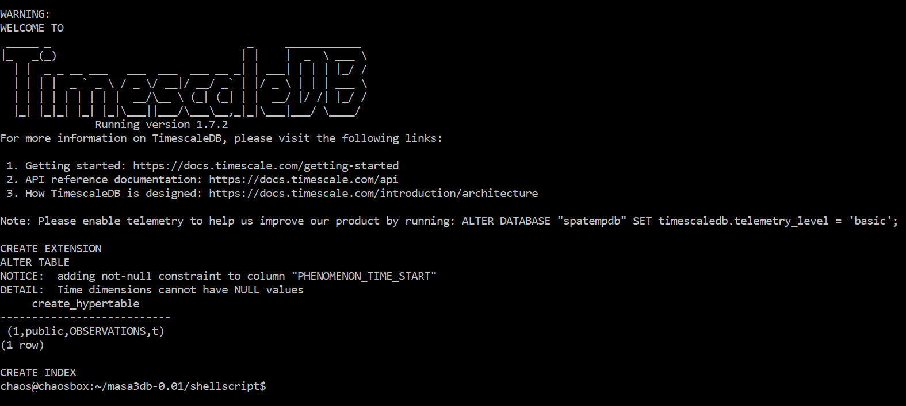
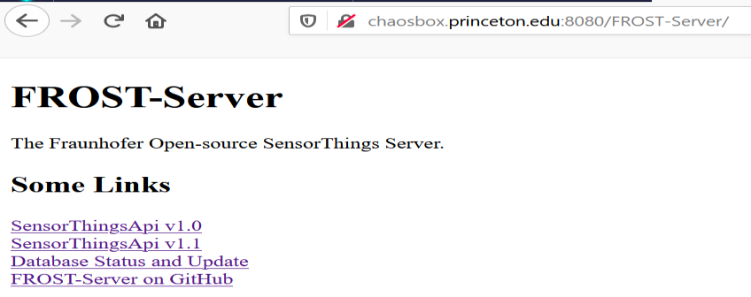
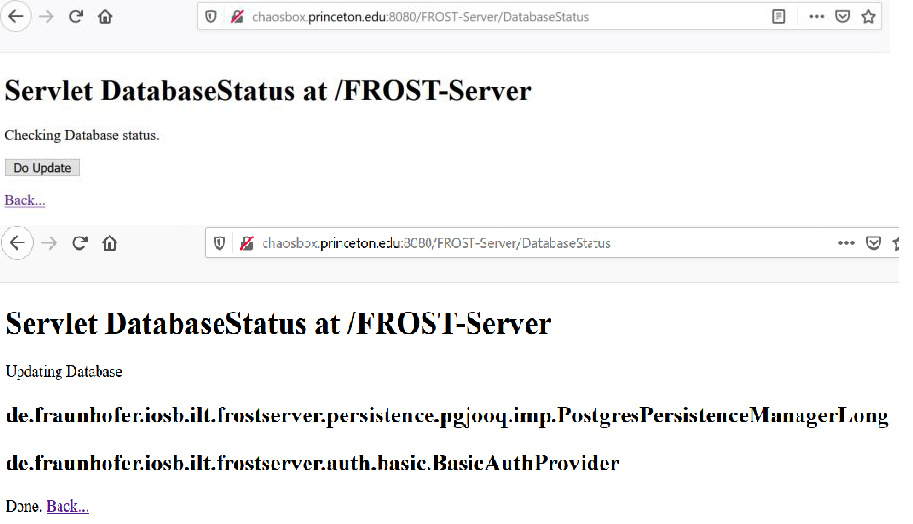

Setup Masa3DB¶
Ubuntu 20.04¶
Download Masa3DB onto your machine¶
Go to the terminal on your Ubuntu machine. Run this command to download the masa3db package.
$ curl -L https://github.com/chenkianwee/masa3db/archive/0.02.zip > masa3db-0.02.zip
a. If curl is not installed on your machine. Install it with this command.
$ sudo apt-get install curl
Unzip the file with this command.
$ unzip masa3db-0.02.zip
a. If unzip is not installed on your machine. Install it with this command.
$ sudo apt-get install unzip
Go into the masa3db-0.02 folder with this command. You will be able to see the following folders and files.
$ cd masa3db-0.02 LICENSE README.md shellscript timescale-3dcitydb
Install Masa3DB¶
Execute this command to install Masa3DB.
$ cd masa3db-0.02/shellscript $ sudo sh setup_masa3db.sh
The script will ask you to enter a series of parameters. Most of the parameters you can just accept the defaults. Remember the passwords and username you entered here as you will need it later.
Fig. 1 The series of parameters to fill, in pay attention to the two parameters as stated below.¶
a. Pay attention to the Service Root URL. If you already have a domain name for your server enter that as the Service Root URL. In this example our domain name is http://chaosbox.princeton.edu.
b. The other parameter to pay attention to is if you want to allow the public to request for data from your database without the need of a password. If you want to set a password set the parameter to “false”.Fig. 2 Two parameters to pay attention.¶
c. If the installation is successful you will see these messages.
Fig. 3 A successful setup.¶
We will check if the database has been successfully installed. Type in this command.
$ sudo docker ps
a. One container is running the postgresql database (container name: spatempdb) and the other is running the FROST-Server (Sensorthings API server) (container name: frost). All the data is stored in the spatempdb container while the frost container enables the sensorthings api to access the database.

Fig. 4 Two containers will be running spatempdb and frost if you have accepted the default naming of containers.¶
Go to http://you_public_ip_address:8080/FROST-Server you will be able to see this landing page. This means that your sensorthings API is setup.
Fig. 5 The landing page of the FROST-Server (Sensorthings API).¶
a. Click on the Database Status and Update. You will be prompted to key in your username and password. The default username and passwords are admin. We can change it later.
b. Once you enter the page click on do update. Once successfully update this message will be shown.Fig. 6 Successfully updated the FROST-Server settings.¶
Congratulation you have successfully installed Masa3DB.
Uninstall Masa3DB¶
Execute this command to uninstall Masa3DB.
!!!This will remove the database with all its data!!!
$ cd masa3db-0.02/shellscript $ sudo sh rmv_masa3db.sh